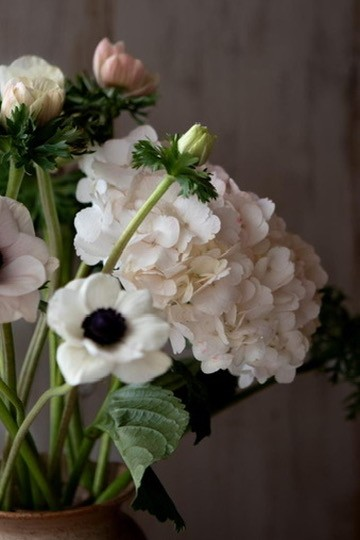
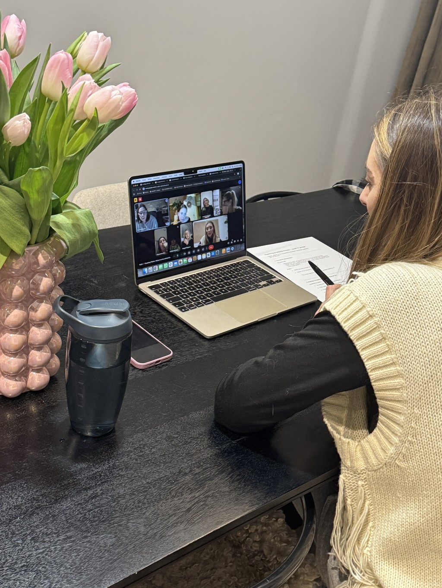
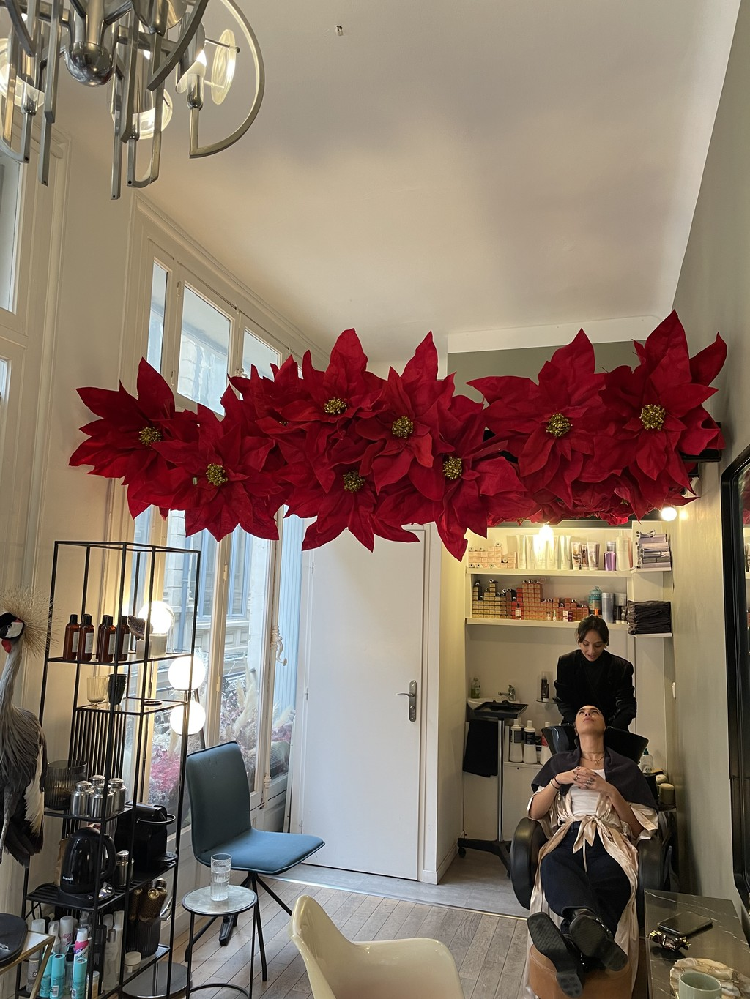
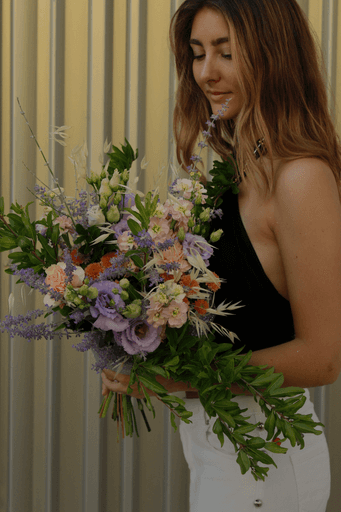
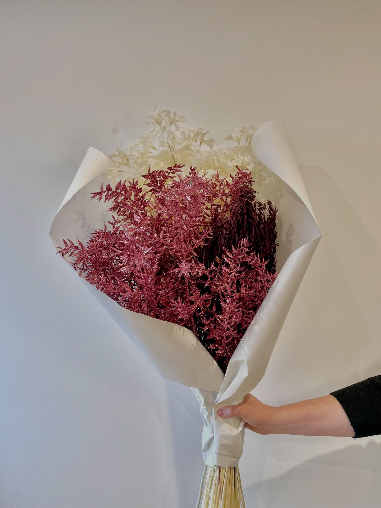
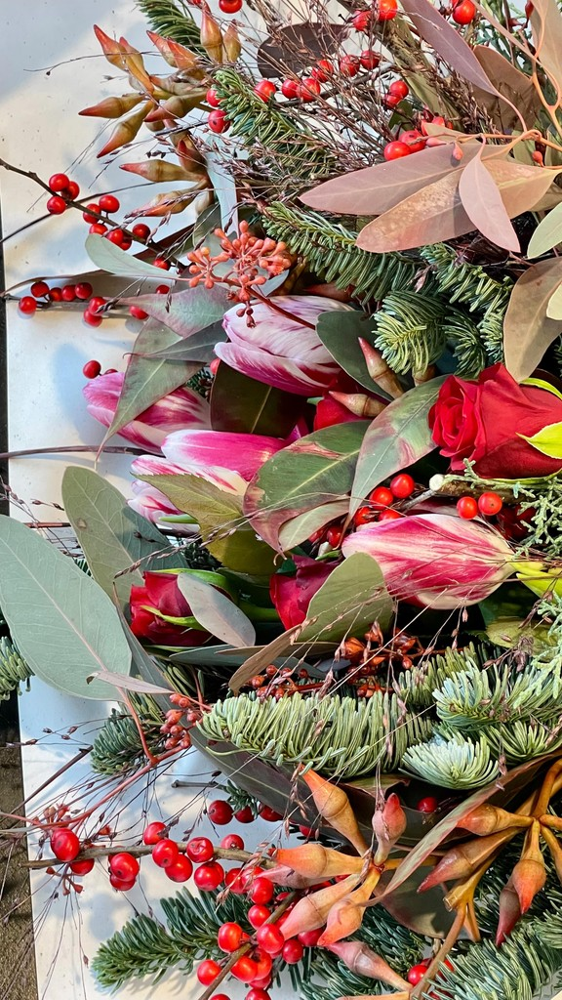
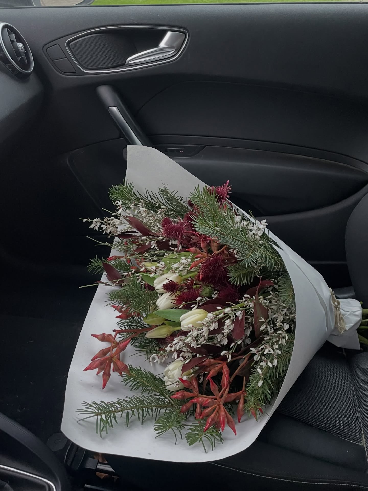
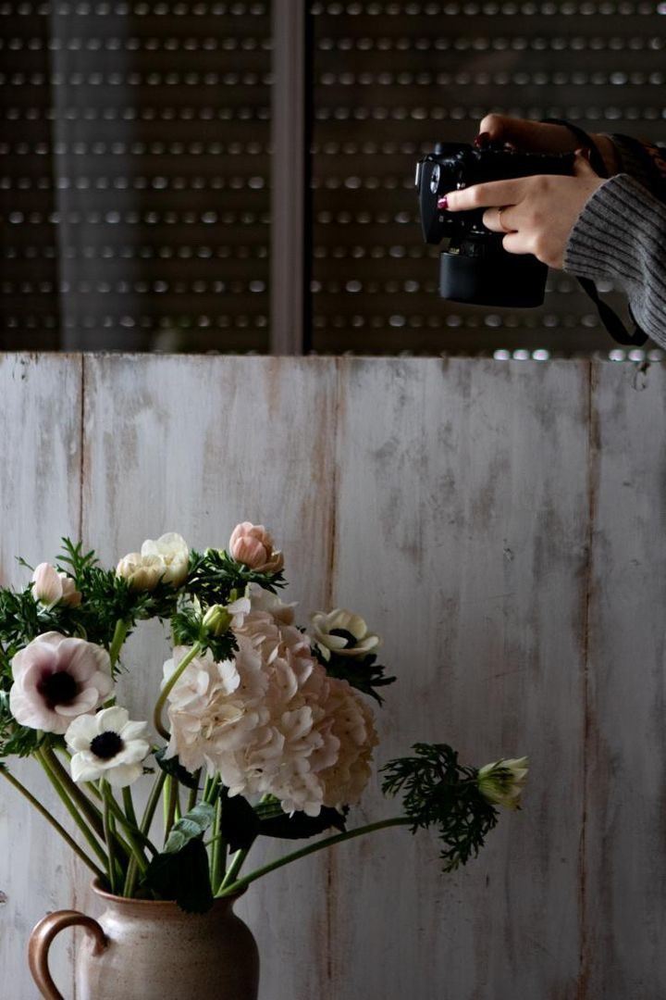
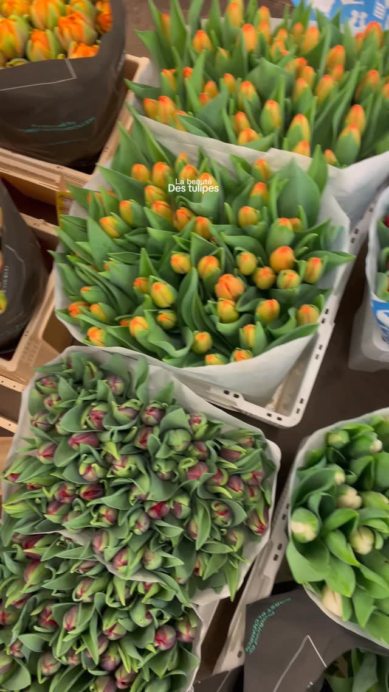
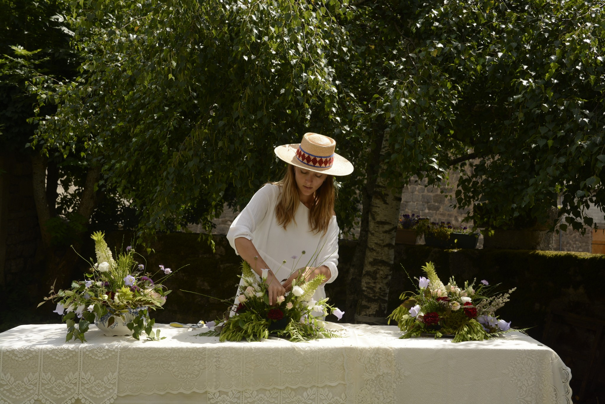

Bâtissez un business floral durable qui préserve votre santé et votre créativité. Une méthode éprouvée alliant savoir-faire artisanal de maître d'apprentissage et stratégie marketing moderne pour vivre enfin de vos fleurs en seulement 3 mois.
Trois profils, une même ambition : vivre pleinement de son art floral.
Vous souhaitez changer de voie et vous orienter vers le métier de fleuriste. La formation vous permet d'acquérir les bases techniques, la méthodologie et la posture professionnelle nécessaires, même sans expérience préalable.
Vous avez déjà les bases du métier (CAP, expérience salariée ou équivalent) et vous souhaitez passer à l'étape suivante : lancer votre activité en tant qu'indépendante. La formation vous accompagne pour structurer votre projet et poser des bases solides.
La formation reprend l'ensemble du programme nécessaire pour se préparer au CAP Fleuriste en candidat libre. Un accompagnement complet permettant de travailler les bases théoriques et pratiques de manière structurée.

Avec la pratique de l'art floral, l'apprentissage des techniques de vente et du marketing sur les réseaux sociaux.

Coachings individuels, sessions de Q&A en direct et analyses de vos projets.

Un réseau d'entraide disponible 24h/24 pour ne plus jamais vous sentir seule.

Tu y découvres :
L'objectif est de te donner une vision claire, réaliste et alignée avec ton projet.

Comprendre le vivant est fondamental pour créer avec justesse.
Dans ce module, tu apprends :
Tu développes une compréhension profonde du végétal, au service de la durabilité de tes créations.

Ce module est dédié aux gestes du métier.
Tu apprends à :
L'objectif est de te rendre à l'aise techniquement et confiante dans ton savoir-faire.

L'art floral va bien au-delà de la technique.
Tu développes ton œil artistique grâce à :
Tu apprends à donner une intention et une cohérence à chacune de tes créations.

Créer de belles compositions ne suffit pas si l'on ne sait pas les vendre.
Ce module t'aide à :
Tu apprends à vendre avec justesse, sans te brader.

Avoir du talent ne suffit pas si personne ne vous voit.
Dans ce module, vous apprenez à :
L'objectif est simple : ne plus attendre les clients, mais savoir les attirer. Vous développez une visibilité structurée, alignée avec votre univers et votre ambition.
Pas un modèle imposé. Pas une reproduction à l'identique. Ici, on t'enseigne les bonnes techniques et les règles d'or — puis on te laisse développer ton style, oser, créer.
« Je ne crois pas aux "talents innés" réservés à quelques élus. Je crois au progrès visible : à un geste corrigé, à une technique bien maîtrisée et des fleurs bien choisies. »
— Sybile Loppé
Un accompagnement 100 % personnalisé en illimité pour corriger ton geste, faire tes premiers devis et défendre tes prix.
Technique et business, Q&A en direct, review de tes projets — toutes les sessions sont enregistrées.
Gros formats — arches, structures, événementiel — filmés en replay et accessibles à vie.
Fleuriste diplômée (CAP et Brevet Professionnel), Sybile Loppé exerce le métier depuis plus de huit ans, en boutique comme en tant qu'indépendante.
Au fil de son parcours, elle a développé une approche concrète et réaliste du métier, nourrie par l'expérience du terrain et la transmission, notamment en tant que maître d'apprentissage.
Aujourd'hui, elle accompagne celles et ceux qui souhaitent se former ou se reconvertir au métier de fleuriste, en partageant une méthode qu'elle a elle-même construite et éprouvée, avec l'envie d'aider chacun à bâtir une activité florale plus sereine, alignée et durable.

De la botanique aux compositions florales pour les moments clés de la vie. Acquérez tous les gestes pour devenir une fleuriste confiante et accomplie.
Chiffrez vos devis, construisez des offres cohérentes et trouvez vos premiers clients. Ne plus attendre les clients, savoir les attirer.
Structurez une activité pérenne, en atelier ou à domicile. Une méthode qui préserve votre santé et votre créativité sur le long terme.
Obtenez la certification de l'Académie et préparez le CAP Fleuriste en candidat libre. Diplôme d'État + méthode entrepreneuriale.